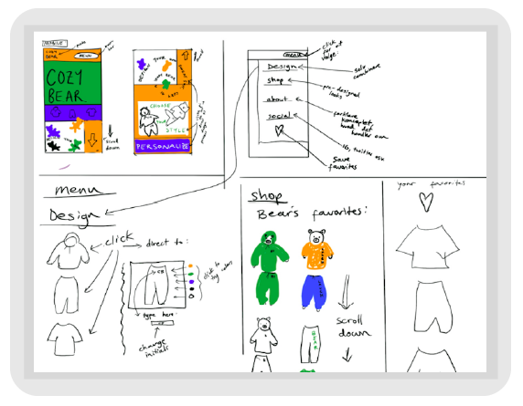
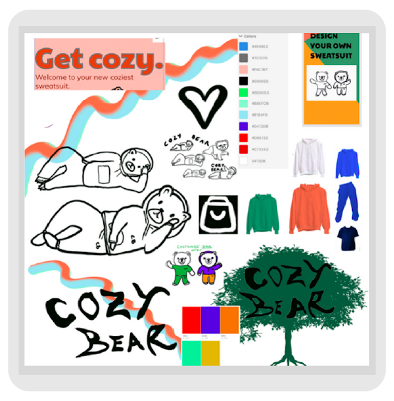
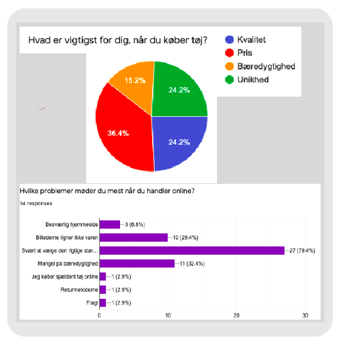
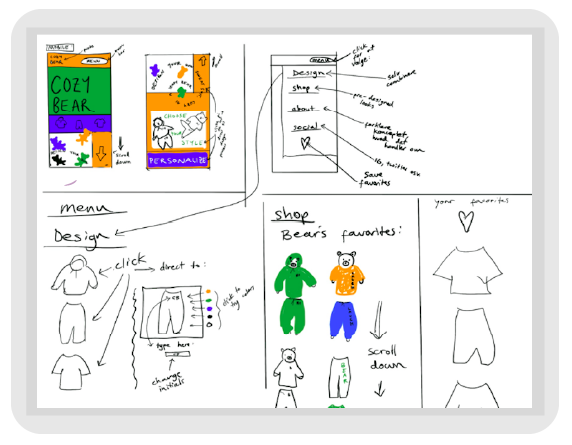
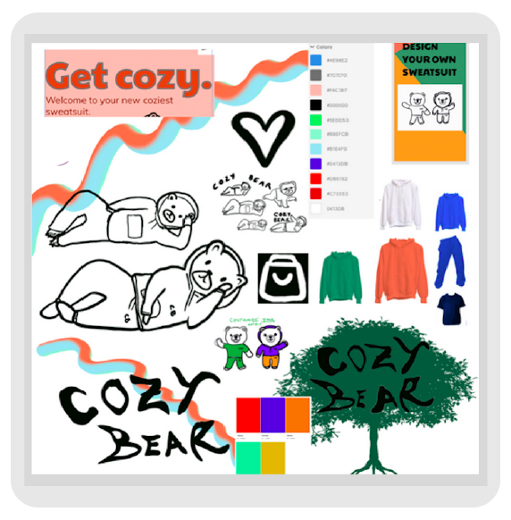
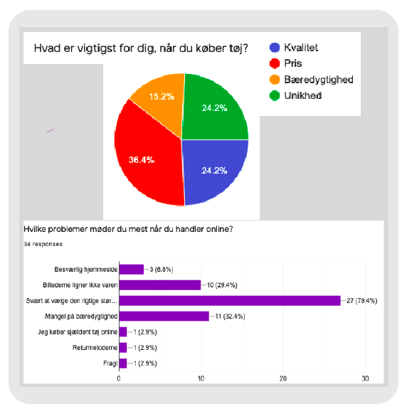

Overordnet
Målet med UX temaet var at lave en lettilgængelig brugergrænseflade. Gennem de forskellige opgaver, fik jeg teoretisk og praktisk viden om grundlæggende UX, samt en dybere forståelse for Adobe XD.
Cozy Bear
Vi fik opgaven at skabe en imaginær webshop der skulle sælge t-shirts og to andre varer. Vi startede helt fra bunden med udvikling af koncept, og endte med en grundig interaktiv prototype i Adobe XD. Jeg opfandt en imaginær webshop ved navn ‘Cozy Bear’, som solgte t-shirts, joggingbukser og hoodies. Ideen startede med en vision om at lave et uprætentiøst, unisex og tilgængeligt brand. Den måde jeg fokuserede på bæredygtighed og slow-fashion var, at skabe et produkt som holder i så mange år, så man ikke behøver at købe nyt afslapningstøj hele tiden. Fordelen for kunden var dermed at de køber et universelt og tidsløst look. Hvis jeg havde mere tid, ville jeg have lavet en fotoserie med nogle unge menneskser i en Cozy Bear sweatsuit hvor det forestiller sig at være i 80’erne, og så vise en ældre person i samme sweatsuit i nutid, for at gøre grin med konceptet om at der er ingen udløbsdato og at kvaliteten er så god at det aldrig slider. Så kunne jeg lave fiktive fortællinger på hjemmesiden om kunder fra f.eks. 2060 der går i samme sweatsuit som de købte tilbage i 2022.
Processen
For at lære mere om brugerens behov og adfærd lavede vi forskellige bruger-optimerings tests som Observation, Tænkehøjt, 5. sek-test, surveys med både kvantitative og kvalitative spørgsmål og et interview. Jeg lærte især vigtigheden i at lave survey research, da man kan få indsigter om problemstillinger man ikke kendte til før undersøgelsen. Jeg kunne bruge de data jeg indsamletde til at udvikle mine produkter ud fra målgruppens reelle behov, i stedet for bare at forestille mig hvad de vil være interesseret i, og dermed fik jeg både af-og bekræftet de hypoteser jeg havde om målgruppen.
Vi lavede desk research, hvor jeg lærte mere om hvor kompleks det er når man snakker om bæredygtighed med e-handel.
Vi brugte forskellige redskaber i idefasen til at udarbejde vores webshop koncept. Mit koncept udviklede sig meget gennem de her øvelser, især “Crazy 8’s”, hvorfra bjørne elementet af mit brand opstod.
 





Prototypen
Gennem diverse tests af min prototype, blev jeg opmærksom på vigtigheden af at lave tests af et projekt for at få et udefra blik, samt nyt perspektiv. Jeg fik et større kendskab til Adobe XD og værdien af at lave en prototype inden man begynder at kode en omfattende hjemmeside, da det er et langt større arbejde at ændre kodning. Jeg lavede nogle store ændringer mellem prototype-1 til prototype-2, efter vi havde lavet user testing på den første udgave. Mit mål med ændringerne var at gøre siden mere overskuelig, men selvom jeg ændrede hele designet, endte det stadigvæk med at have samme slags rodet stil - alt for meget farve og liv til den almene danske bruger.

Refleksion
Det var interessant hvor meget mere fokus jeg havde på designet og at skabe et krøllet og abstrakt produkt, fremover det brugervenligt produkt. Set i bakspejlet, gik jeg ikke nok op i, at prototypen skulle være brugervenlig. I stedet, legede jeg meget med at skabe et sjovt univers som brugeren kom ind i. Jeg lærte, at det er muligt at lave en balance mellem det kunstneriske, og det praktiske der gør online oplevelsen overskuelig for brugeren.
Næste gang vil jeg fokusere mere på det tekniske, fordi jeg forstår godt, at designet ikke betyder meget uden effektiv UX og UI til at understøtte det.